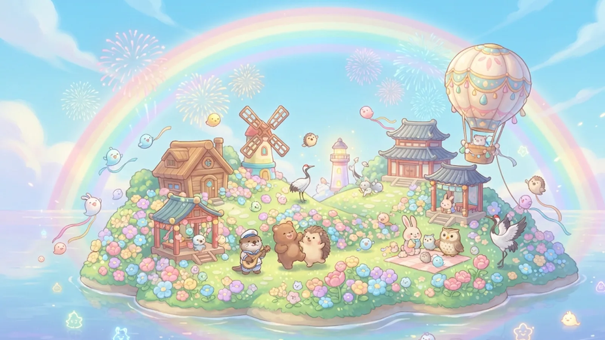
答對一題，島就長大一點。國中會考國文・基礎語文知識練習遊戲
一場「墨潮」把文字之島沖得只剩一片沙洲，島上的字靈四散奔逃，老朋友們也漂流在海上。 你是漂流上岸的新島主——到各地答題收服字靈、帶回建材，把島一格一格蓋回來，再打敗墨潮留下的墨妖，讓島民一個個搬回家。
開始造島先看玩法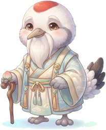
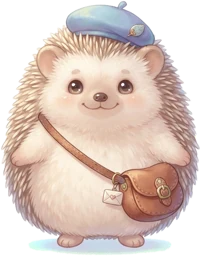
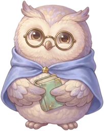
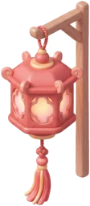
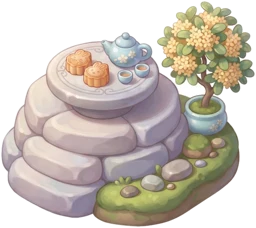
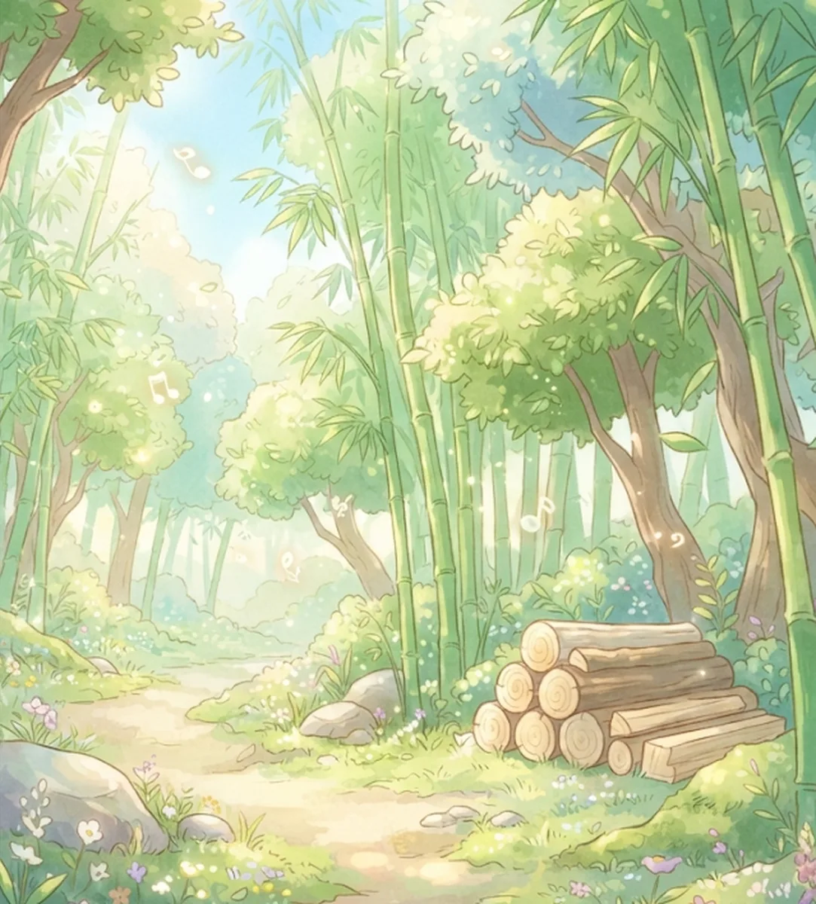
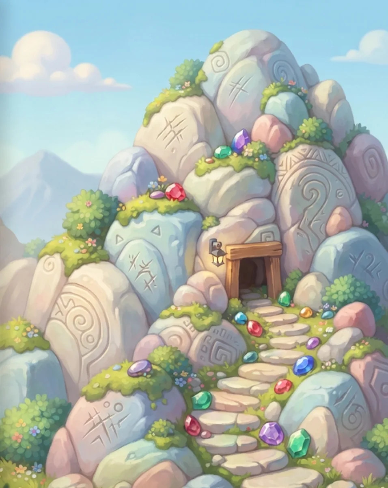
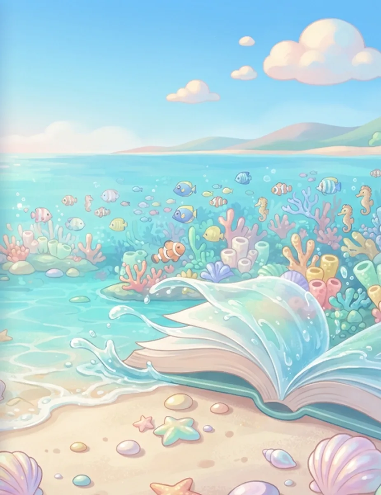
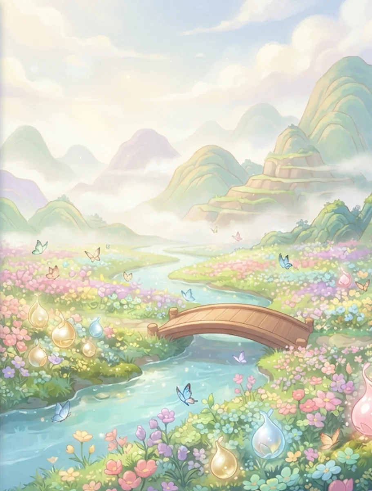
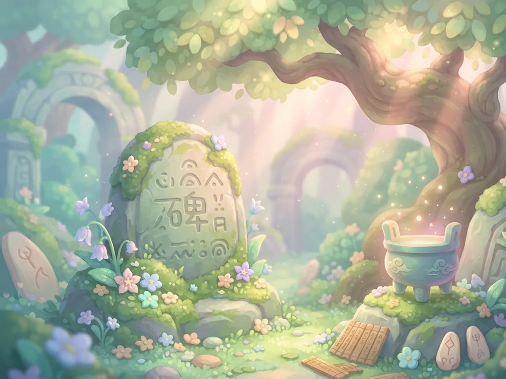
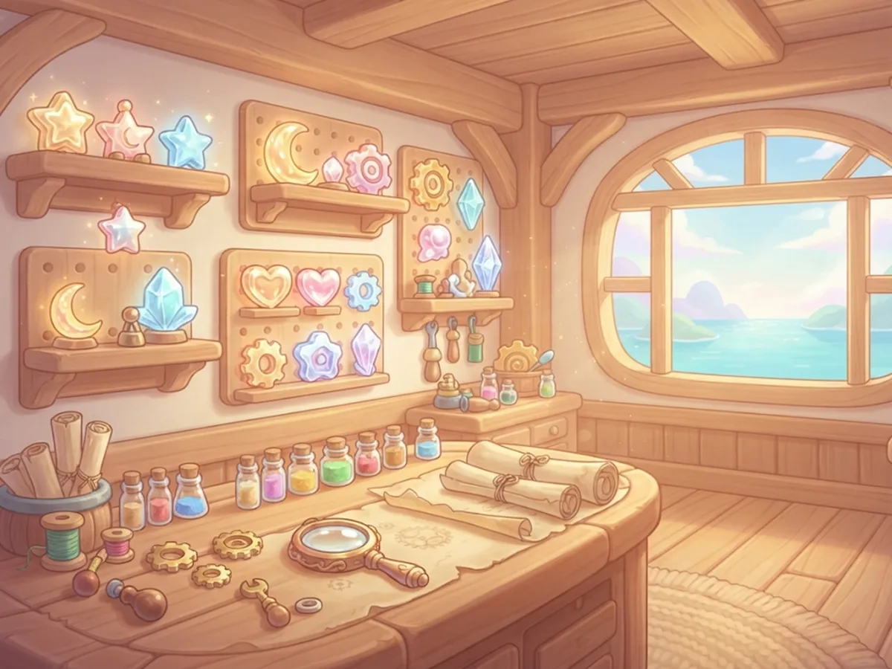
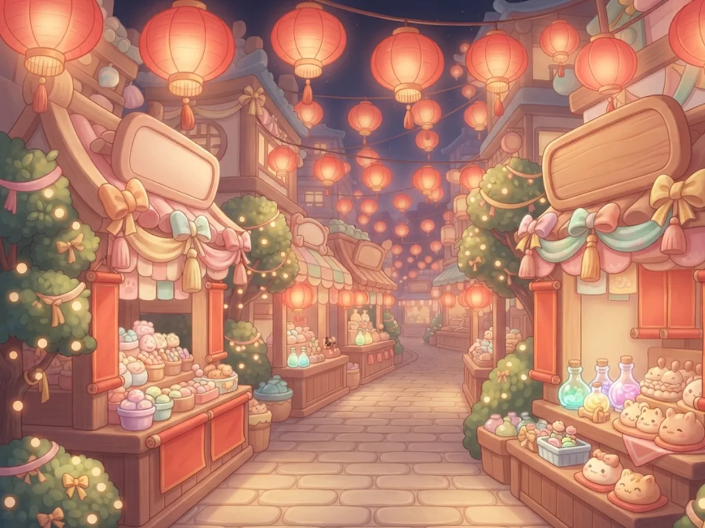
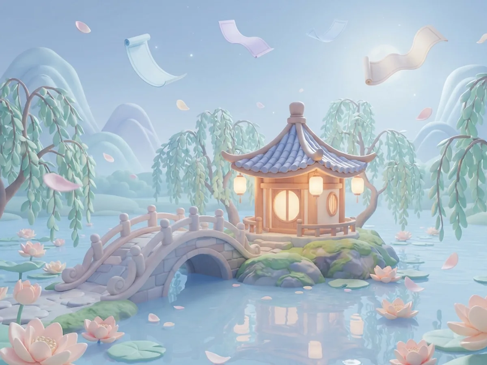
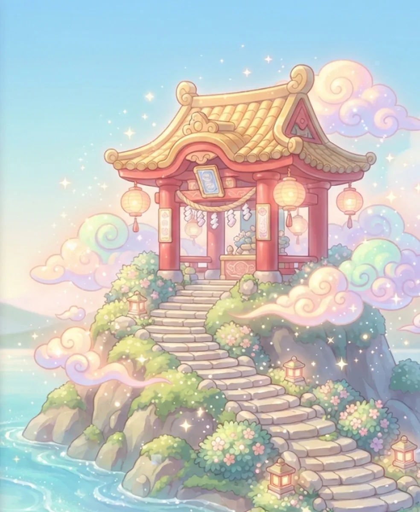
| 字靈 | 題型 | 說明 |
|---|---|---|
| 朱印神靈 | 會考、基測真題 250 題 | 103–115 會考（含補考、重考）與基測公開試題，答案依心測中心參考答案，解析自行撰寫 |
| 金靈 | 會考考法題 | 何者用字完全正確、成語詞語何者使用最恰當、何者沒有語病、題辭運用 |
| 玉靈 | 比對題 | 讀音前後相同、意思前後相同、對聯配對、造字法相同 |
| 墨靈 | 知識點字卡 | 讀音、正確字、字義、成語意思、六書、標點、詩體判斷 |
全部約 10,800 題。字音讀音都經教育部《重編國語辭典修訂本》核對；有兩種說法都通的題目一律不出。
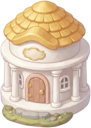
點博物館開圖鑑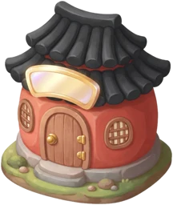
點書院直接去採集墨寶鋪可以買「照妖鏡」（刪掉一個錯誤選項）和「定身符」（答錯可以再答一次）。
進度存在這台裝置的瀏覽器裡；換手機前，到「戰績」複製存檔碼。